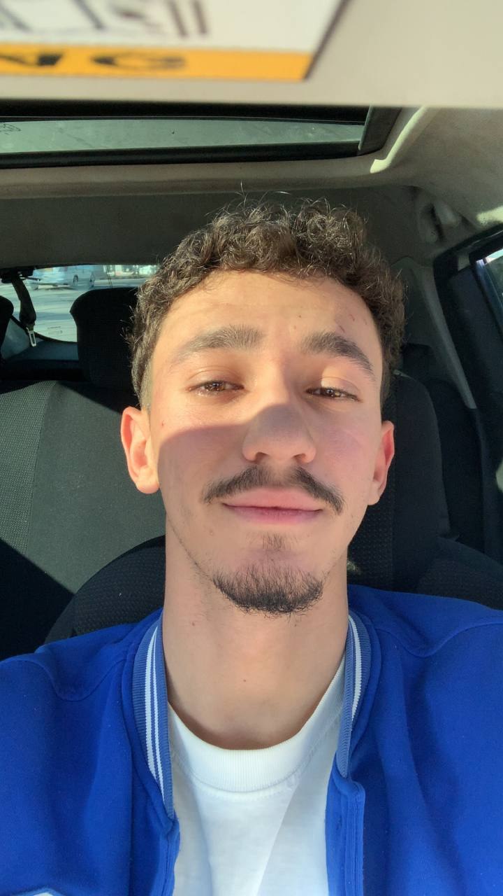

L2 Informatique
Frontend • Backend • AnimationL2 Informatique
UI/UX • Data SystemThis platform was created to present the university in a modern way and to give students a useful digital space where they can access courses, marks, absences, timetable, departments, news and university information.
Build a complete university website with professional UI/UX, responsive design, student portal, admin dashboard and PHP backend.
Modern glassmorphism, 3D animated cards, glowing borders, futuristic gradients, hover movement and responsive layouts.
Choosing structure, pages, colors, university identity and features.
Creating the homepage, departments, news, contact and responsive layouts.
Adding PHP login, JSON database, admin panel, notes and absences system.
Animations, 3D effects, professional pages and final presentation version.
This project represents creativity, teamwork, university spirit and the ambition to build something professional and useful for students.